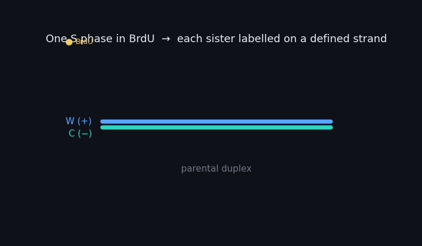
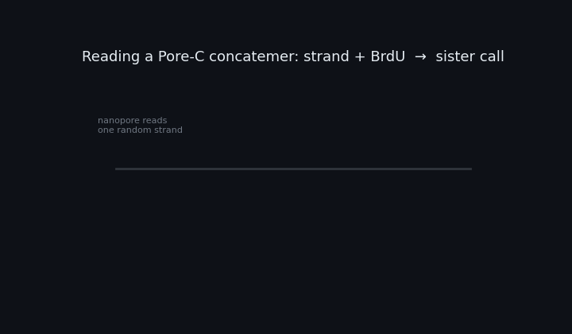
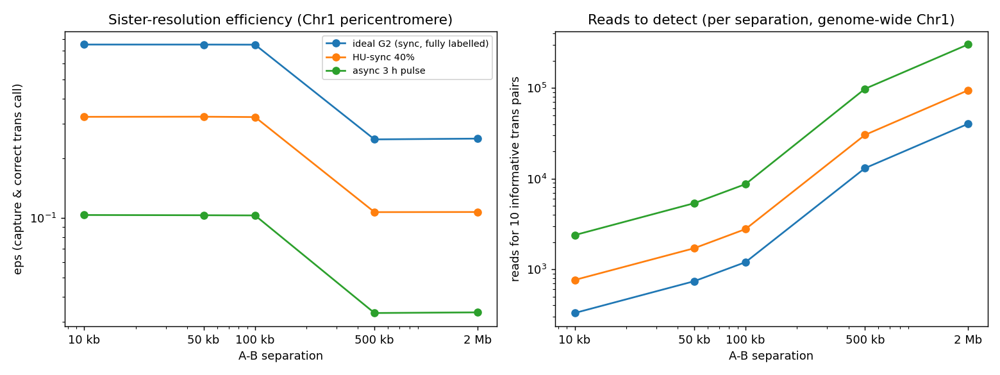
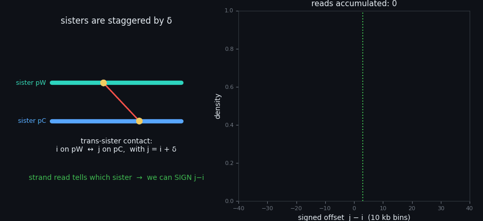
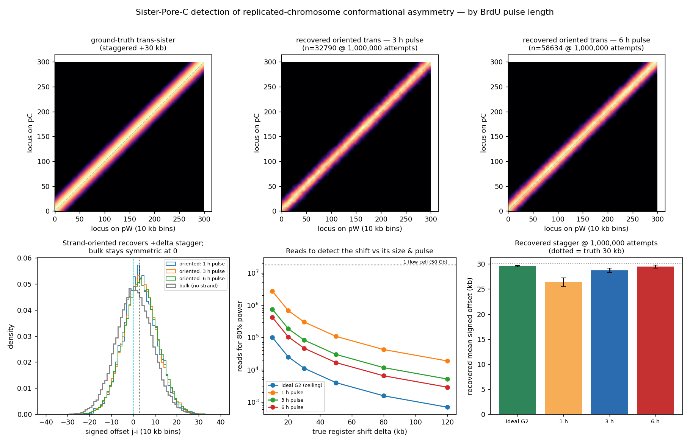
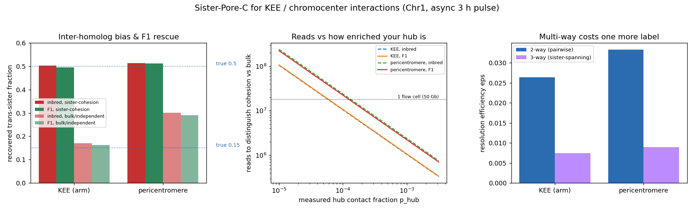

Can asynchronous BrdU Pore-C resolve sister chromatids — and detect the conformational asymmetry of replicated chromosomes?
Jacob González Isa · Henderson Lab, University of Cambridge · Monte-Carlo back-of-envelope (not the final tool)
Short answer: yes. The method is accurate whenever it fires; asynchrony costs read depth, not correctness. The replicated-chromosome register shift is registered to parental-strand orientation — exactly what the BrdU strand read reveals — so it is detectable from a fraction of one flow cell, while bulk Hi-C/Pore-C cannot see it at all.
1 · The idea: BrdU turns strand into sister identity
After one S phase in BrdU, each sister chromatid carries BrdU on a defined strand: the sister that inherited the parental Watson strand (call it pW) has its nascent Crick strand labelled; pC is the mirror. Nanopore reads one random strand per monomer, so a BrdU+ monomer read on strand X must come from the sister with BrdU on X. Chromatid identity is continuous along the chromosome (no sister-chromatid exchange).

Fig 1. One S phase in BrdU produces two sisters labelled on opposite strands (pW: BrdU on C; pC: BrdU on W). This strand→sister map is the whole basis of the method.
2 · Reading a concatemer → a sister call
A Pore-C read is a concatemer of several monomers from one nucleus. For any two monomers on the same chromosome: both BrdU+ and read on the same strand → cis-sister (same chromatid); both BrdU+ on opposite strands → trans-sister (between the two sisters). If a monomer is not BrdU+, it can't be assigned (unless rescued by proximity to a labelled one, ≤100 kb).

Fig 2. Strand + label of two monomers yields the sister call. The failure mode in asynchronous tissue is simply that too few monomers are BrdU+, not that the calls are wrong.
3 · The cost of asynchrony (pilot: one Chr1 trans-sister contact)
In root tips most cells did not replicate during the pulse, so a planted trans-sister contact only exists as a resolvable sister pair in a minority of cells. At a Chr1 pericentromere locus:
quantity
ideal G2 (sync)
async 3 h pulse
P(contact is a resolvable sister pair)
1.00
0.19
capture efficiency ε (≤100 kb, with rescue)
0.75
0.10
capture efficiency ε (>100 kb, no rescue)
0.25
0.033
call purity (correct / all trans calls)
1.00
>0.99
Accuracy is not the problem. Whenever a call is made it is >99% correct, with ~0.15% G1-daughter contamination. Asynchrony costs ~7× more reads than perfect synchrony (driven mostly by only ~19% of cells being in the right state), not accuracy.

Fig 3. Left: sister-resolution efficiency ε vs A–B separation (rescue keeps ≤100 kb high). Right: reads to accumulate 10 informative trans-sister pairs at a given separation, genome-wide on Chr1.
Reads to accumulate 10 informative trans-sister pairs at a separation, anywhere on Chr1 (the practical, aggregated readout):
separation
ideal
async 3 h
10 kb
330
2,400
100 kb
1,200
8,700
500 kb
13,000
98,000
2 Mb
40,000
302,000
You will not see individual trans-sister pixels. A single specific A–B pair needs millions–hundreds of millions of reads. The observable is the aggregated / binned trans-sister signal (by distance, by region) — that is cheap even asynchronous.
4 · The target: conformational asymmetry of replicated chromosomes
The Gerlich lab (Science 2025, biorxiv 2025.07.09.663929) showed with sister-chromatid-sensitive Hi-C that sisters are consistently staggered by a register shift δ along the 5′→3′ direction of the inherited strand — trans-sister contacts peak at j − i = +δ, not at 0, explained by directionally-misaligned cohesive cohesin.
Why sister-Pore-C is the right tool. The shift is registered to parental-strand orientation. The BrdU strand read tells you which sister each labelled monomer is on, so every trans-sister contact can be signed along that axis. Bulk Hi-C/Pore-C can't orient the pair, so +δ and −δ superimpose into a symmetric diagonal — the asymmetry is invisible without strand resolution.

Fig 4. Strand-oriented trans-sister contacts (blue) build a peak at +δ as reads accumulate; the running mean lands on the true shift. Bulk (grey), with no strand information, stays symmetric at 0. The asymmetry lives entirely in the signed offset.
5 · Detection by BrdU pulse length
The register shift is a 1-D statistic (mean signed offset), not a 2-D map — so it needs only ~56 oriented trans-sister contacts for 80% power (assuming δ = 30 kb, spread σ = 80 kb). Longer BrdU pulses label more cells and cut the read requirement:
BrdU pulse
oriented trans / read
reads for 80% power
flow cells (50 Gb)
ideal G2 (ceiling)
5.0e-3
11,000
0.001
1 h pulse
1.9e-4
301,000
0.017
3 h pulse
6.7e-4
83,000
0.005
6 h pulse
1.2e-3
46,000
0.003
Depth is not the bottleneck in Arabidopsis. A flow cell yields ~50 Gb; the genome is only 135 Mb → ~370× coverage per flow cell (~18 M Pore-C reads at ~2.7 kb/read). So detecting the register shift at a 3 h pulse costs ≈0.005 of a flow cell — you are limited by biology and confounds, not sequencing.

Fig 5. Top: ground-truth vs strand-oriented recovered trans-sister maps (3 h, 6 h pulse). Bottom-left: strand-oriented offset recovers +δ; bulk is symmetric. Bottom-middle: reads-to-detect vs shift size and pulse. Bottom-right: recovered stagger matches truth at every pulse.
Pulse recommendation. 1 h → 3 h is the big win (~6× fewer reads, because a 1 h pulse is shorter than S so co-labelling of both loci is rare). 3 h → 6 h is only ~1.8× more and 6 h starts accruing post-mitotic G1-daughter contamination. 3 h is the sweet spot — the whole asymmetry measurement costs ≈0.005 of a flow cell.
6 · KEE / chromocenter interactions: intra- vs inter-sister
Beyond the asymmetry, the more Arabidopsis-native use is to decompose your prominent hubs — the KNOT / KEEs and the pericentromere chromocenter — into cis-sister (within one chromatid), trans-sister (between sisters), and inter-homolog contacts. Is a KEE–KEE (or chromocenter) interaction intra-sister, inter-sister, or both? And is pericentromere clustering driven by sister cohesion or by sister-agnostic bulk aggregation?

Fig 6. Left: recovered trans-sister fraction vs truth — KEEs are unbiased in inbred Col-0, but at the pericentromere inter-homolog contacts inflate "bulk" (true 0.15) to ~0.30. Middle: reads to distinguish sister-cohesion from bulk vs how enriched your hub is (p_hub). Right: a 3-way sister-spanning hub costs one extra BrdU coin-flip (~3.6×).
region
scenario (true)
inbred Col-0
Col×Ler F1
KEE (arm)
cohesion (0.50)
0.50
0.50
KEE (arm)
bulk (0.15)
0.17
0.16
pericentromere
cohesion (0.50)
0.51
0.51
pericentromere
bulk (0.15)
0.30 ⚠
0.29 ⚠
The chromocenter trap. At the pericentromere, inter-homolog contacts (~40%) inflate the inbred trans-sister estimate — bulk clustering (true 0.15) reads as 0.30, which can be mistaken for partial sister cohesion. And F1 barely rescues it: pericentromeric reads can't be haplotagged (low SNP density / repeats → only ~6% of inter-homolog pairs identified). So treat the raw inbred pericentromere trans-fraction with suspicion and subtract an inter-homolog model. KEEs (euchromatic, low inter-homolog) are the clean first target — answerable in inbred Col-0 today.
Reads. Only ~30 (KEE) to ~80 (pericentromere) sister-resolved contacts are needed to distinguish cohesion from bulk (≈384 to pin the fraction to ±0.05). Total reads = contacts / (p_hub × ε), with ε ≈ 0.03; plug in your measured hub contact fraction p_hub:
p_hub (your maps)
KEE reads
KEE flow cells
pericentromere reads
peri flow cells
1e-3 (strong hub)
1.1e6
0.06
2.4e6
0.13
1e-4
1.1e7
0.6
2.4e7
1.3
1e-5 (weak)
1.1e8
6
2.4e8
13
So for a strong KEE/chromocenter interaction it's a fraction of a flow cell; read your real p_hub off the existing AlwI/BfaI maps to fix the number. Multi-way (a single molecule touching a hub across both sisters — impossible for Hi-C) costs ~3.6× more.
7 · Conclusions
Feasible. Detecting the replicated-chromosome register shift needs tens of thousands of reads even asynchronous — a fraction of one flow cell.
Strand resolution is essential and sufficient. The asymmetry is registered to parental strand, so it survives population averaging once you orient by strand; bulk methods cannot recover it.
Read the signed offset, not a full map. The 1-D collapse is ~10³–10⁴× cheaper than a sister-resolved 2-D contact map.
3 h BrdU pulse, no chase. Best trade of yield vs. G1-daughter / double-labelling confounds.
KEEs first, chromocenter with care. KEE intra- vs inter-sister engagement is answerable in inbred Col-0 now; the pericentromere sister question needs an inter-homolog correction (F1 alone fails in the repeats).
Sequencing is not the limit. ~370× depth per flow cell on this 135 Mb genome — the constraints are labelling efficiency, inter-homolog contamination, and repeat mappability.
Caveats — this is a back-of-envelope.
δ and σ are assumed; reads scale as (σ/δ)² — plug in the paper's real magnitudes (if δ ≈ 10 kb it is ~9× more reads, still < 0.1 flow cell at 3 h).
Per-monomer BrdU detection was saturated here (many T per monomer); with low BrdU or short monomers, use the real FORT-A per-T sensitivity and scale reads up.
Phenomenological contact kernel + TAIR10 coordinates. Absolute read counts are order-of-magnitude; the ratios (sync vs async, pulse vs pulse) are robust. Next: swap in real Chr1 P(s) from the AlwI/BfaI .pairs and the Col-CC assembly.